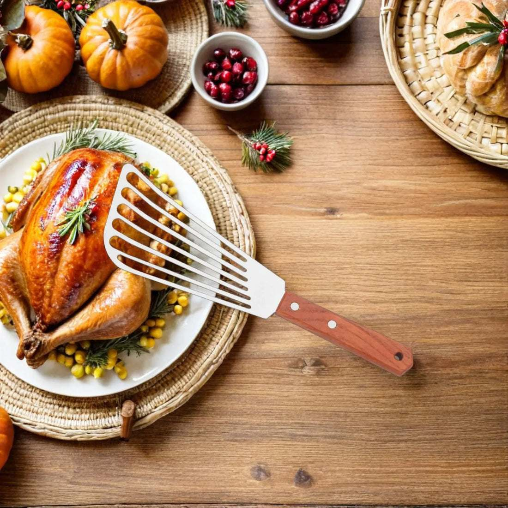
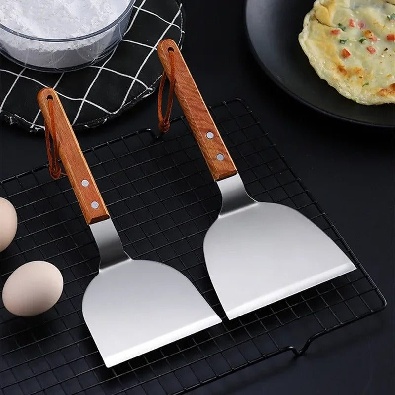
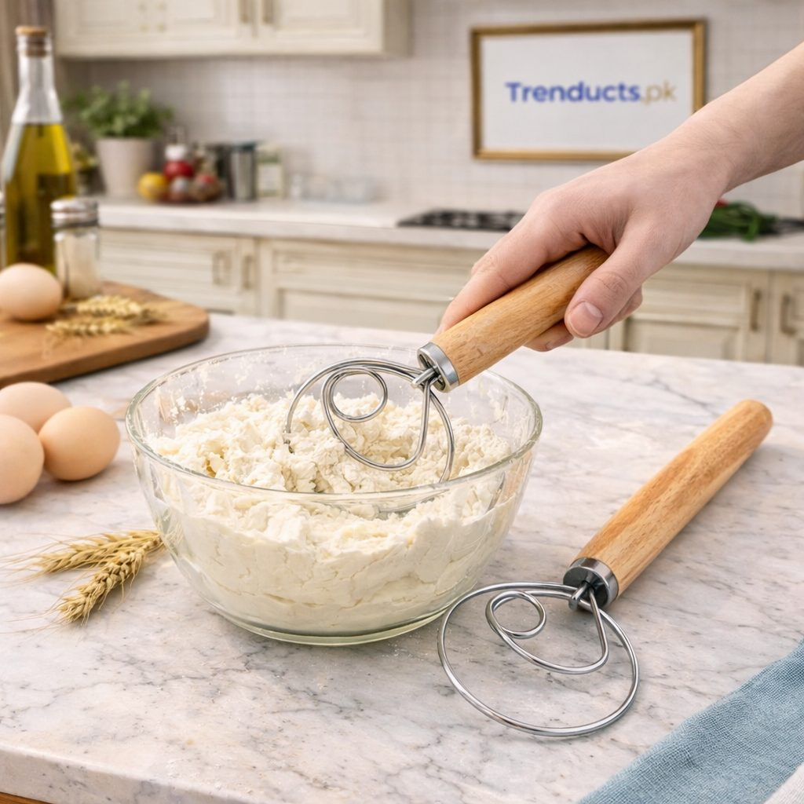

The tawa is the most used pan in a Pakistani kitchen. Every day, families eat roti, chapati or paratha, often with every meal. Add fried eggs at breakfast, shami kebabs and cutlets for guests, and the tawa is rarely cold. Yet many kitchens use the same bent steel spatula for everything, or flip rotis with bare fingers and burn them. The right hand tools make daily cooking smoother and much safer.
The humble chimta
The traditional chimta, a pair of long flat tongs, is essential for roti makers. It turns rotis on the tawa, lifts them onto the open flame to puff them up, and moves them into the chabba or hot pot. A good chimta has a strong spring, a comfortable grip and long arms to keep your hands away from the flame. Steel chimtas last for years.

Spatulas for different jobs
Not all spatulas are the same, and having two or three types helps:
- A wide, flat spatula for flipping parathas, omelettes and cutlets
- A slotted spatula that lets oil drain, ideal for frying fish, pakoras and kebabs
- A heavy-duty griddle spatula with a solid blade for scraping and chopping on a tawa, useful for tawa chicken and kata kat
- A silicone or wooden spatula for non-stick pans
Spatulas with wooden handles stay cool and give a firm grip even when hands are oily.
Tongs for frying and grilling
Kitchen tongs are useful far beyond the tawa. They turn chicken pieces and kebabs in hot oil without splashing, lift corn from boiling water, and serve salad and pasta. Choose tongs with a locking mechanism for easy storage, and silicone tips if you cook on non-stick surfaces. For barbecue, longer tongs keep your hands away from hot coals.
Whisks for batters and dough
A whisk is a quiet hero in the kitchen. Use a balloon whisk for beating eggs, making pakora and besan batter, and stirring halwa or custard so there are no lumps. A Danish-style dough whisk, with its coiled steel head, is excellent for mixing thick batters and dough for cakes, bread and naan without tiring your wrist. It mixes flour evenly and is easy to clean.

Making better parathas
A few tips go along with the right tools. Heat the tawa properly before placing the paratha; a cold tawa makes it chewy. Spread ghee or oil evenly with the back of a spoon or a small brush. Press the edges gently with a flat spatula as it cooks so they become crisp and the layers separate. Flip only once or twice. A wide spatula gives better control, especially with stuffed aloo or qeema parathas.
Caring for your tools
Wash tools soon after use; dried atta and egg are hard to remove. Dry wooden handles fully to stop cracks. Store spatulas and tongs upright in a utensil holder near the stove, so they are ready when the tawa is hot. Replace tools with loose handles or sharp, damaged edges, as they can scratch pans or cause accidents.
Safety at the stove
Kitchen burns are common in Pakistani homes, especially when cooking rotis over an open flame. Use long tools, keep a damp cloth nearby, wear fitted sleeves rather than flowing dupattas near the flame, and keep children out of the cooking area during roti time. Turn pan handles inward so they are not knocked off.

Setting up a roti station
Arrange your cooking area efficiently: dough and flour on one side, the tawa and chimta in the centre, and a lined hot pot ready to receive cooked rotis on the other. This keeps the rhythm going and rotis warm for the whole family.
Tools for new cooks
Young people learning to cook, or newly married couples setting up a kitchen, benefit most from good basic tools. A starter kit of a chimta, a flat spatula, a slotted spatula, tongs and a whisk covers almost every daily need.
Upgrade your kitchen tools
Slotted turners, heavy griddle spatulas, dough whisks and tongs are available from Trenducts, with delivery anywhere in Pakistan. With the right tools in hand, roti time becomes a pleasure rather than a chore.